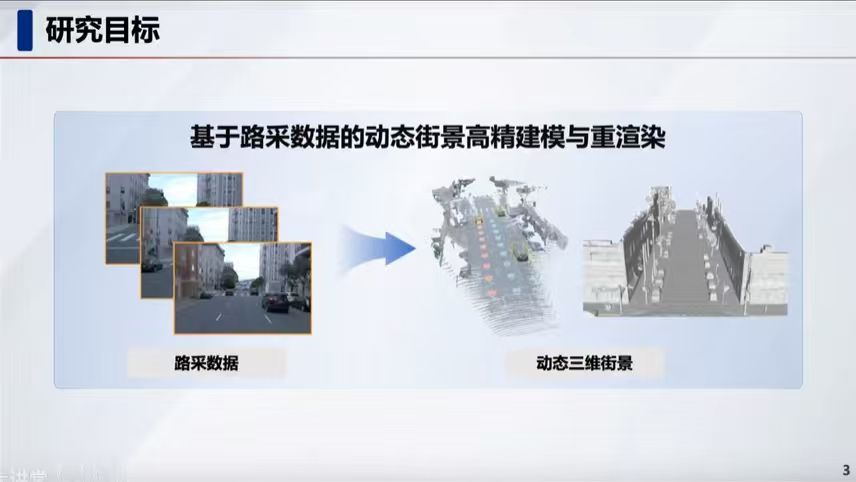
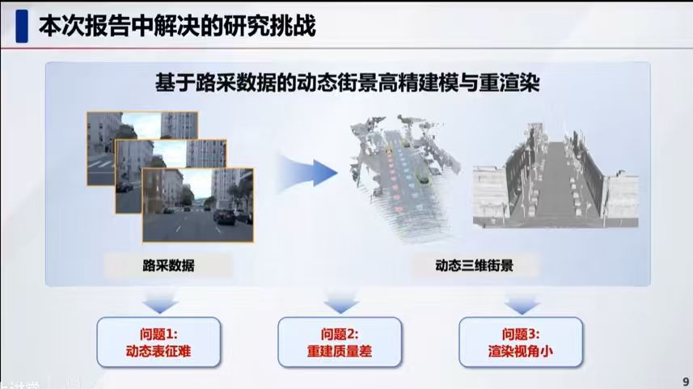
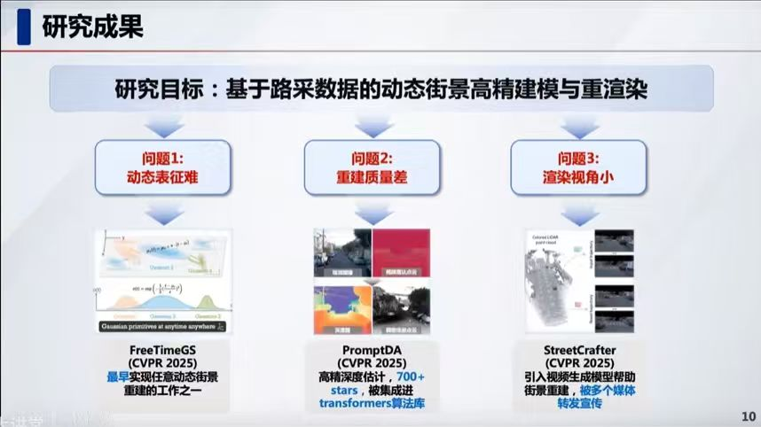
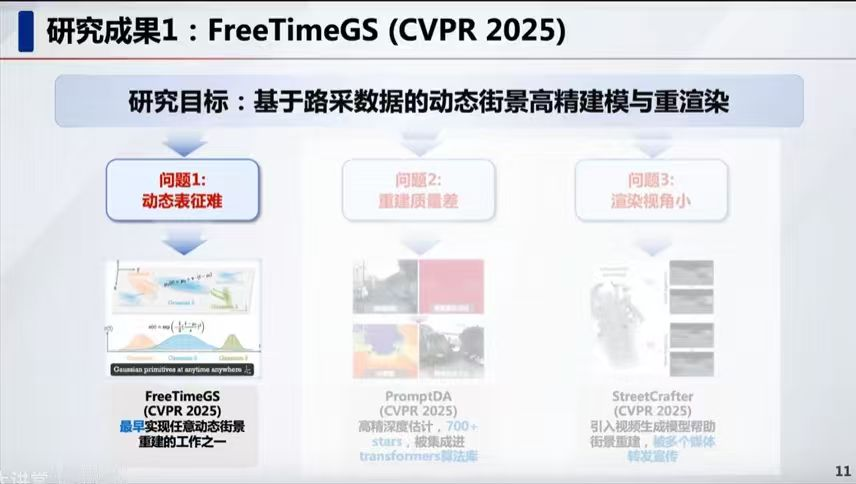
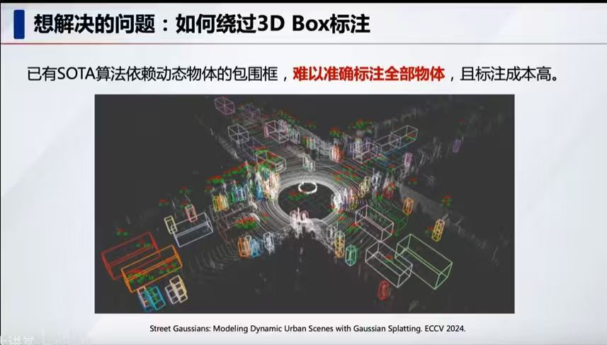
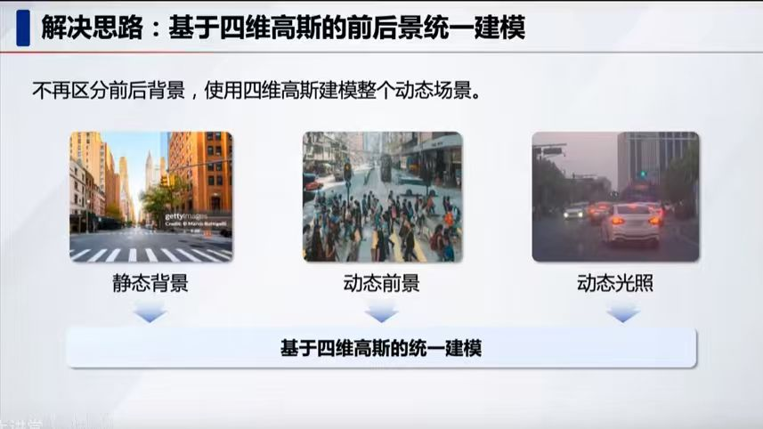
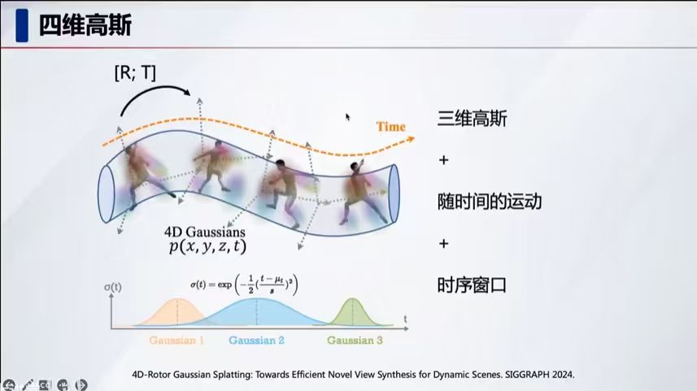
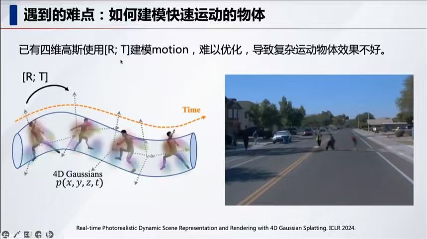
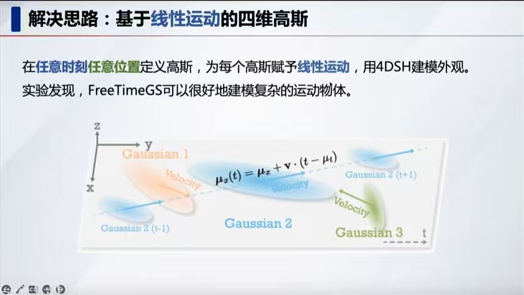
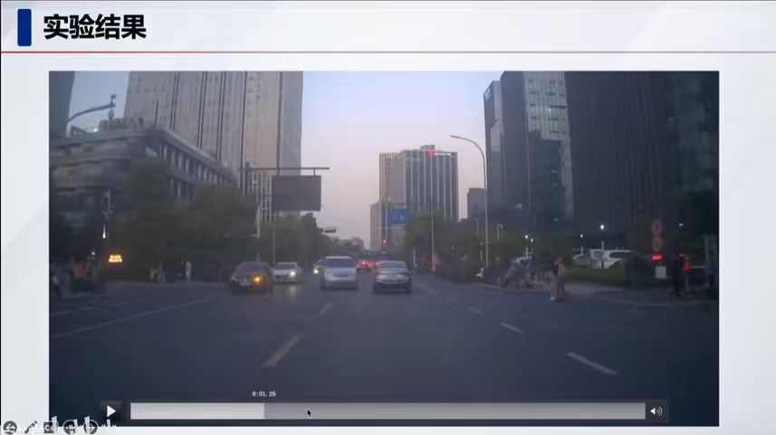

What do you see in this image?
该图像是中国图学学会“奋发图强”博士生Workshop（2025年度第五期，总第21期）的演讲封面。主题为“面向自动驾驶仿真的动态街景重建技术”，演讲者为浙江大学的彭思达。

What do you see in this image?
本研究的核心目标是：基于路采数据的动态街景高精建模与重渲染。
通过处理路采的原始视频数据，实现对复杂城市环境的数字化：

What do you see in this image?
本研究在“基于路采数据的动态街景高精建模与重渲染”过程中，重点解决了以下三个核心技术难题：

What do you see in this image?
针对前述三个挑战，本研究提出了对应的解决方案，并发表于 CVPR 2025：

What do you see in this image?
本页重点介绍了研究成果之一：FreeTimeGS (CVPR 2025)。
这是针对前述“动态表征难”问题提出的解决方案：

What do you see in this image?
本研究旨在解决自动驾驶街景建模中“如何绕过 3D Box 标注”的问题：

What do you see in this image?
本页介绍了一种创新的“基于四维高斯（4D Gaussian）的前后景统一建模”解决思路：

What do you see in this image?
本页阐述了“四维高斯（4D Gaussian）”的数学表达与物理构成，旨在实现动态场景的高效表征：

What do you see in this image?
本页指出了在动态场景重建中遇到的一个技术难点：如何建模快速运动的物体。

What do you see in this image?
本页介绍了一种针对快速运动物体建模的解决方案：基于线性运动（Linear Motion）的四维高斯。

What do you see in this image?
本页展示了 FreeTimeGS 在真实城市道路交通场景中的实验结果：